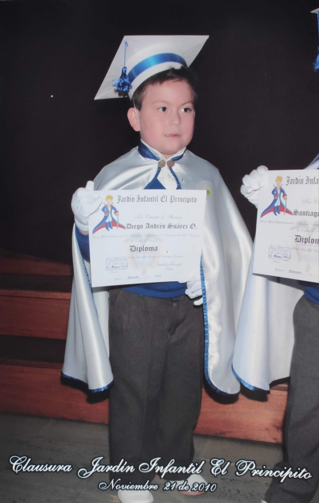
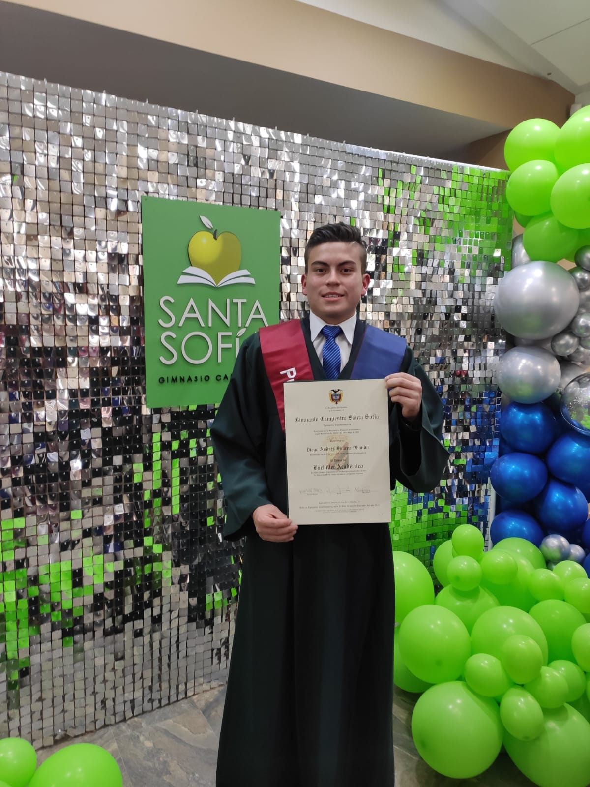

Hola!, Soy un chico de 18 años, nací en Bogotá pero fui criado desde que tengo memoria en Zipaquirá,actualmente vivo en dicha ciudad con mis padres y mi hermana menor; en este momento estoy cursando un pregrado en Ingeniería Informática en La Universidad de la Sabana, es una excelente universidad que se enfoca principalmente en formar excelentes personas y profesionales para un mejor futuro del país.Ahora mismo estoy en tercer semestre y me ha gustado mucho la carrera porque he aprendido cosas nuevas que las he aplicado a mi vida cotidiana, he tenido la oportunidad de conocer personas increibles que me aportan para avanzar en mi proyecto de vida. Algunos de mis hobbies son: salir con amigos o familia, ir al gimnasio( me he convertido en un Gymrat), jugar y ver fútbol(soy hincha a morir de Millonarios FC), ver videos, lives en youtube y Twitch (para ser mas especifico shows de comedia, blogs, reacciones, podcast y más) y por último pero no menos importante escuchar música (es lo que más hago en mi día a día).
Mi enfoque STEM
Educación inicial y preescolar
A los 3 años mis padres me matricularón al jardín infantil "El Principito", en principio fue un poco duro acostumbrarme pero a medida que iba pasando el tiempo tenía más confianza con mis nuevos amigos, las profesoras y conmigo mismo. El preescolar fue una etapa muy especial porque en ella pude descubrir nuevas facetas que tanto como mi familia como yo no sabía que tenía, por ejemplo descubrí que tenía buena motricidad, buenas habilidades para el baile y para la actuación, en especial la declamación de poemas. A esta institución le tengo mucho aprecio ya que aprendí demasiadas cosas que fuerón demasiado escenciales para la primaria, el aprendizaje fue tan excelente que estaba adelantado a comparación con los demás compañeros.
Educación Básica Primaria
Curse toda mi primaria en el "Colegio Nuestra Señora del Luxemburgo", es una institución catolíca la cual está dirigida por monjas; durante esta etapa pude fortalecer mi relación con Dios ya que todos los días orabamos y el ambiente del colegio estaba enfocado en la religion catolica.
En este colegio conocí y forje grandes amistades que al día de hoy mantengo, pero en especial en esta institución conocí a mi mejor amigo , hasta el sol de hoy seguimos siendo mejores amigos, tenemos una amistad sincera, real y fuera de los estandares comunes, para mi es un hermano de otra madre. Por otro lado en la primaria descubrí unos de mis hobbys favoritos (el fútbol), a lo largo de la primaria estuve inscrito en diferentes academicas en las cuales mejores mis hablidades, gane muchos partidos y torneos.
En esta etapa puedo destacar momentos y situaciones que me dierón una perspectiva de la vida diferente:
1. Me postule como personero estudiantil, pero quede en la segunda posición; esto me hizo aprender que no siempre vamos a ganar y que debemos aceptar la derrota aunque nos duela un poco.
2. Las ganas y las intenciones de ayudar a las personas sin recibir nada a cambio.
3. La intención de proponer proyectos y tener esas habilidades de liderazgo.
4. Aprendí que las amistades no duran para siempre y que las personas toman caminos diferentes.
Educación Media
Estudie todo mi bachillerato en el "Gimnasio Campestre Santa Sofia", de todas la etapas es una de las más fuertes en cuanto a responsabilidad ya que es ahí cuando empiezas a ser más maduro en todo sentido, en esta etapa fue donde descubrí que me encantaban los videojuegos, empece a jugarlos con una intensidad a tal punto que logre ser parte de un equipo profesional de E-Sports en el cual jugabamos torneos profesionales de grandes cadenas de videojuegos como Volk games que es una liga patrocinada por Caracol televisión. En el bachillerato hice más amistades, algunos se fueron en el camino pero siempre los llevare en mi corazón. A mediados del grado octavo empeze a descubir que me gustaba salir con mis amigos a todo tipo de planes (en especial las fiestas jajaja), esto tambien se convertiría a la larga en uno de mis pasatiempos favoritos. En grado once llego la incertidumbre de como quiero encaminar mi proyecto de vida, en principio estaba muy confundido en saber que era lo que quería en mi vida, finalmente me dicidí en estudiar ingeniería informática porque la tecnología y la programación siempre me ha fascinado y esta carrera contiene un poco de esto y mucho más.
Aspiraciones a futuro

Aspiro culminar exitosamente mis estudios de pregrado y continuar con un posgrado en Europa, tengo varios enfoques en mi mente pero me mantengo abierto a nuevas oportunidades que me brinde la vida; por el momento me agrada mucho aprender sobre la intengilecia artificial, la ciberseguridad y el blockchain. Entre otros aspectos quiero seguir con el buen habito de seguir yendo al gimnasio y potencializar mi fisico más que todo para estar muy bien tanto de salud como física como mental, quiero conocer nuevas personas, conocer nuevos lugares y superarme cada vez más para poder salir adelante y plantearme metas más grandes; cada día voy a seguirla rompiendo y no descansare hasta ser el mejor. Y recuerden...Hoy puede ser arroz pero mañana Bacardi y chuleta!!!!!!!.
Recomendaciones